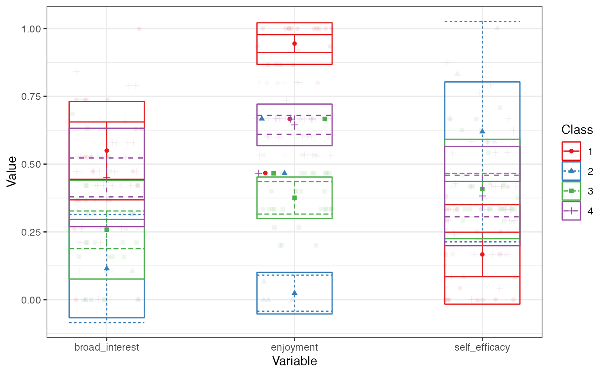

Introduction to tidyLPA
Joshua M. Rosenberg
2026-02-25
Source:vignettes/Introduction_to_tidyLPA.Rmd
Introduction_to_tidyLPA.RmdLatent Profile Analysis (LPA) is a statistical modeling approach for estimating distinct profiles, or groups, of variables. In the social sciences and in educational research, these profiles could represent, for example, how different youth experience dimensions of being engaged (i.e., cognitively, behaviorally, and affectively) at the same time.
tidyLPA provides the functionality to carry out LPA in R. In particular, tidyLPA provides functionality to specify different models that determine whether and how different parameters (i.e., means, variances, and covariances) are estimated and to specify (and compare solutions for) the number of profiles to estimate.
This introduction to tidyLPA vignette is an overview of LPA and the tidyLPA package. This vignette covers the following topics:
- Background on Latent Profile Analysis
- Description of the goals of tidyLPA
- Software approach to carrying out LPA: Interface to mclust (and to MPlus)
- An example
- More information on model specification
- Other functionality
- Conclusion
Background on Latent Profile Analysis (LPA)
Latent Profile Analysis (LPA) is a statistical modeling approach for estimating distinct profiles of variables. In the social sciences and in educational research, these profiles could represent, for example, how different youth experience dimensions of being engaged (i.e., cognitively, behaviorally, and affectively) at the same time. Note that LPA works best with continuous variables (and, in some cases, ordinal variables), but is not appropriate for dichotomous (binary) variables.
Many analysts have carried out LPA using a latent variable modeling approach. From this approach, different parameters - means, variances, and covariances - are freely estimated across profiles, fixed to be the same across profiles, or constrained to be zero. The MPlus software is commonly used to estimate these models (see here) using the expectation-maximization (EM) algorithm to obtain the maximum likelihood estimates for the parameters.
Different models (or how or whether parameters are estimated) can be specified and estimated. While MPlus is widely-used (and powerful), it is costly, closed-source, and can be difficult to use, particularly with respect to interpreting or using the output of specified models as part of a reproducible workflow.
Description of the goals of tidyLPA
The goal of tidyLPA is to make it easy to carry out LPA using R. In particular, tidyLPA provides an interface to the powerful and widely-used mclust package for Gaussian Mixture Modeling. This means that tidyLPA does not contain code to carry out LPA directly, but rather provides “wrappers” to mclust functions that make them easier to use. The primary contributions of tidyLPA are to:
- Provide functionality to specify models that are common to LPA
- Make it easier to use the output in subsequent analysis through a “tidy” interface, in that:
- input and output are both a
data.frame(specifically its modified version, atibble) that can be used to create plots or can be used in subsequent analyses - uses the “pipe” operator,
%>%to compose functions - being designed and documented to be easy to use, especially for beginners (but also to provide options for finer-grained choices for estimating the model and for viewing more specific forms of the LPA output)
Software approach to carrying out LPA: Interface to mclust (and to MPlus)
In the open-source R software, there is not yet a tool to easily carry out LPA, though there are many tools that one could use to. For example, the R version of OpenMx can be used for this purpose (and to specify almost any model possible to specify within a latent variable modeling approach). However, while OpenMx is very flexible, it can also be challenging to use.
Other tools in R allow for estimating Gaussian mixture models, or models of multivariate Gaussian (or normal) distributions. In this framework, the term “mixture component” has a similar meaning to a profile. While much more constraining than the latent variable modeling framework, the approach is often similar or the same: the EM algorithm is used to (aim to) obtain the maximum likelihood estimates for the parameters being estimated. Like in the latent variable modeling framework, different models can be specified.
In addition to following the same general approach, using tools that are designed for Gaussian mixture modeling have other benefits, some efficiency-related (see RMixMod, which uses compiled C++ code) and others in terms of ease-of-use (i.e., the plot methods built-in to RMixMod, mclust, and other tools). However, they also have some drawbacks, in that it can be difficult to translate between the model specifications, which are often described in terms of the geometric properties of the multivariate distributions being estimated (i.e., “spherical, equal volume”), rather than in terms of whether and how the means, variances, and covariances are estimated. They also may use different default settings (than those encountered in MPlus) in terms of the EM algorithm, which can make comparing results across tools challenging.
This package focuses on models that are commonly specified as part of LPA. Because MPlus is so widely-used, it can be helpful to compare output from other software to MPlus. The functions in tidyLPA that use mclust have been benchmarked to MPlus for a series of simple models (with small datasets and for models with small numbers of profiles. This becnhmarking vignette contains information on how mclust and Mplus compare. As long as you have purchased MPlus (and installed MplusAutomation), this vignette can be used to replicate all of the results for the benchmark. Note that most of the output is identical, though there are some differences in the hundredths decimal places for some. Because of differences in settings for the EM algorithm and particularly for the start values (random starts for MPlus and starting values from hierarchical clustering for mclust), differences may be expected for more complex data and models. An important direction for the development of tidyLPA (the functions that use mclust) is to continue to understand when and why the output differs from MPlus output. Note that tidyLPA also provides functions to interface to MPlus, though these are not the focus of the package, as they require MPlus to be purchased and installed in order to be used.
Example
Installation
You can install tidyLPA from CRAN with:
install.packages("tidyLPA")You can also install the development version of tidyLPA from GitHub with:
install.packages("devtools")
devtools::install_github("data-edu/tidyLPA")Mclust
Here is a brief example using the built-in pisaUSA15
data set and variables for broad interest, enjoyment, and self-efficacy.
Note that we first type the name of the data frame, followed by the
unquoted names of the variables used to create the profiles. We also
specify the number of profiles and the model. See
?estimate_profiles for more details.
In these examples, we pass the results of one function to the next by
piping (using the %>% operator, loaded from the
dplyr package). We pass the data to a function that selects
relevant variables, and then to estimate_profiles:
pisaUSA15[1:100, ] %>%
select(broad_interest, enjoyment, self_efficacy) %>%
single_imputation() %>%
estimate_profiles(3)
#> tidyLPA analysis using mclust:
#>
#> Model Classes AIC BIC Entropy prob_min prob_max n_min n_max BLRT_p
#> 1 1 3 640.64 677.11 0.81 0.84 0.95 0.03 0.65 0.01Mplus
We can use Mplus simply by changing the package argument for
estimate_profiles() (not run):
pisaUSA15[1:100, ] %>%
select(broad_interest, enjoyment, self_efficacy) %>%
single_imputation() %>%
estimate_profiles(3, package = "MplusAutomation")A simple summary of the analysis is printed to the console (and its
posterior probability). The resulting object can be further passed down
a pipeline to other functions, such as plot,
compare_solutions, get_data,
get_fit, etc. This is the “tidy” part, in that the function
can be embedded in a tidy analysis pipeline.
If you have Mplus installed, you can call the version of this
function that uses MPlus in the same way, by adding the argument
package = "MplusAutomation.
We can plot the profiles by piping the output to
plot_profiles(). We add a random seed as the BLRT
calculation is stochastic:
set.seed(42)
pisaUSA15[1:100, ] %>%
select(broad_interest, enjoyment, self_efficacy) %>%
single_imputation() %>%
scale() %>%
estimate_profiles(3) %>%
plot_profiles()
Comparing a wide range of solutions
The function compare_solutions() compares the fit of
several estimated models, with varying numbers of profiles and model
specifications:
pisaUSA15[1:100, ] %>%
select(broad_interest, enjoyment, self_efficacy) %>%
single_imputation() %>%
estimate_profiles(1:3,
variances = c("equal", "varying"),
covariances = c("zero", "varying")) %>%
compare_solutions(statistics = c("AIC", "BIC"))
#> Warning in (function (data, modelName = NULL, nboot = 999, level = 0.05, : some
#> model(s) could not be fitted!
#> Warning: The solution with the minimum number of classes under consideration
#> was considered to be the best solution according to one or more fit indices.
#> Examine your results with care; consider adding a smaller number of classes.
#> Compare tidyLPA solutions:
#>
#> Model Classes AIC BIC
#> 1 1 670.672 686.303
#> 1 2 634.432 660.484
#> 1 3 625.457 661.929
#> 6 1 623.392 654.654
#> 6 2 636.057 701.186
#> 6 3 629.751 728.747
#>
#> Best model according to AIC is Model 6 with 1 classes.
#> Best model according to BIC is Model 6 with 1 classes.
#>
#> An analytic hierarchy process, based on the fit indices AIC, AWE, BIC, CLC, and KIC (Akogul & Erisoglu, 2017), suggests the best solution is Model 6 with 1 classes.Passing additional arguments
Additional arguments can be passed as follows.
For MPlus (here, the additional argument is ANALYSIS;
see:
pisaUSA15[1:100, ] %>%
select(broad_interest, enjoyment, self_efficacy) %>%
single_imputation() %>%
estimate_profiles(3,
package = "mplus",
ANALYSIS = "starts = 100, 20;")For mclust (here, the additional argument is to prior;
see ?mclust::mclust for other options):
pisaUSA15[1:100, ] %>%
select(broad_interest, enjoyment, self_efficacy) %>%
single_imputation() %>%
estimate_profiles(3,
prior = priorControl())More information on model specifications
Model specification
In addition to the number of profiles (specified with the
n_profiles argument), the model can be specified in terms
of whether and how the variable variances and covariances are
estimated.
The models are specified by passing arguments to the
variance and covariance arguments. The
possible values for these arguments are:
-
variances: “equal” and “varying” -
covariances: “varying”, “equal”, and “zero”
If no values are specified for these, then the variances are constrained to be equal across classes, and covariances are fixed to 0 (conditional independence of the indicators).
These arguments allow for four models to be specified:
- Equal variances and covariances fixed to 0 (Model 1)
- Varying variances and covariances fixed to 0 (Model 2)
- Equal variances and equal covariances (Model 3)
- Varying variances and varying covariances (Model 6)
Two additional models (Models 4 and 5) can be fit using MPlus. More information on the models can be found in the vignette.
Here is an example of specifying a model with varying variances and covariances (Model 6):
pisaUSA15[1:100, ] %>%
select(broad_interest, enjoyment, self_efficacy) %>%
estimate_profiles(3,
variances = "varying",
covariances = "varying")
#> Warning in estimate_profiles_mclust(df_full, n_profiles, model_numbers, : The mclust algorithm does not allow for missing data. Some rows were omitted from analysis. Consider using OpenMx, which accounts for cases with partially missing data, or use a non-parametric single imputation technique prior to analysis, such as the R-package 'missForest'.
#> tidyLPA analysis using mclust:
#>
#> Model Classes AIC BIC Entropy prob_min prob_max n_min n_max BLRT_p
#> 1 6 3 601.13 697.78 0.86 0.87 0.98 0.16 0.62 0.02In general, the approach to choosing the model is similar to choosing the number of profiles, requiring deciding on the basis of evidence from multiple sources, including information criteria, statistical tests, and concerns of interpretability and parsimony. The article by Pastor and colleagues (2007) has helpful information on the model specifications. Here, the six models that are possible to specify in LPA are described in terms of how the variables used to create the profiles are estimated.
Note that p represents different profiles and each parameterization is represented by a 4 x 4 covariance matrix and therefore would represent the parameterization for a four-profile solution. In all of the models, the means are estimated freely in the different profiles. Imagine that each row and column represents a different variable, i.e., the first row (and column) represents broad interest, the second enjoyment, the third self-efficacy, and the fourth another variable, i.e., future goals and plans.
1. Equal variances, and covariances fixed to 0 (model 1)
In this model, which corresponds to the mclust model wit the name “EEI”, the variances are estimated to be equal across profiles, indicated by the absence of a p subscript for any of the diagonal elements of the matrix. The covariances are constrained to be zero, as indicated by the 0’s between every combination of the variables.
It is specified with variances = "equal" and
covariances = "zero".
This model is highly constrained but also parsimonious: the profiles are estimated in such a way that the variables’ variances are identical for each of the profiles, and the relationships between the variables are not estimated. In this way, less degrees of freedom are taken used to explain the observations that make up the data. However, estimating more parameters–as in the other models–may better explain the data, justifying the addition in complexity that their addition involves (and their reduction in degrees of freedom). This model is sometimes referred to as a class-invariant parameterization.
2. Varying variances and covariances fixed to 0 (model 2)
This model corresponds to the mclust model “VVI” and allows for the variances to be freely estimated across profiles. The covariances are constrained to zero.
It is specified with variances = "varying" and
covariances = "zero".
Thus, it is more flexible (and less parsimonious) than model 1, but in terms of the covariances, is more constrained than model 2. This model is sometimes referred to as a class-varying diagonal parameterization.
3. Equal variances and equal covariances (model 3)
This model corresponds to the mclust model “EEE”. In this model, the variances are still constrained to be the same across the profiles, although now the covariances are estimated (but like the variances, are constrained to be the same across profiles).
It is specified with variances = "equal" and
covariances = "equal".
Thus, this model is the first to estimate the covariance (or correlations) of the variables used to create the profiles, thus adding more information that can be used to better understand the characteristics of the profiles (and, potentially, better explain the data). This model is sometimes referred to as a class-invariant unrestricted parameterization.
4. Varying means, varying variances, and equal covariances (model 4)
This model, which specifies for the variances to be freely estimated across the profiles and for the covariances to be estimated to be equal across profiles, extends model 3.
It is specified with variances = "varying" and
covariances = "equal".
Unfortunately, this model cannot be specified with mclust, though it can be with MPlus; this model can be used with the functions to interface to MPlus described below.
5. Varying means, equal variances, and varying covariances (model 5)
This model specifies the variances to be equal across the profiles, but allows the covariances to be freely estimated across the profiles.
It is specified with variances = "equal" and
covariances = "varying".
Like model 4, this model cannot be specified with mclust, though it can be with MPlus. Again, this model can be used with the functions to interface to MPlus described below.
6. Varying variances and varying covariances (model 6)
This model corresponds to the mclust model “VVV”. It allows the variances and the covariances to be freely estimated across profiles.
It is specified with variances = "varying" and
covariances = "varying".
Thus, it is the most complex model, with the potential to allow for understanding many aspects of the variables that are used to estimate the profiles and how they are related. However, it is less parsimonious than all of the other models, and the added parameters should be considered in light of how preferred this model is relative to those with more simple specifications. This model is sometimes referred to as a class-varying unrestricted parameterization.
Other functionality
Getting estimates
There is a lot of output that is possible to obtain from the
estimate_profiles() function - much more than a tidy data
frame, which is the default. The easiest way to access it is by using
the get_estimates() function.
m3 <- pisaUSA15[1:100, ] %>%
select(broad_interest, enjoyment, self_efficacy) %>%
estimate_profiles(3)
#> Warning in estimate_profiles_mclust(df_full, n_profiles, model_numbers, : The mclust algorithm does not allow for missing data. Some rows were omitted from analysis. Consider using OpenMx, which accounts for cases with partially missing data, or use a non-parametric single imputation technique prior to analysis, such as the R-package 'missForest'.
get_estimates(m3)
#> # A tibble: 18 × 8
#> Category Parameter Estimate se p Class Model Classes
#> <chr> <chr> <dbl> <dbl> <dbl> <int> <dbl> <dbl>
#> 1 Means broad_interest 3.09 0.207 1.42e- 50 1 1 3
#> 2 Means enjoyment 3.51 0.183 6.68e- 82 1 1 3
#> 3 Means self_efficacy 1.58 0.184 9.84e- 18 1 1 3
#> 4 Variances broad_interest 0.489 0.114 1.91e- 5 1 1 3
#> 5 Variances enjoyment 0.230 0.0582 7.60e- 5 1 1 3
#> 6 Variances self_efficacy 0.246 0.0455 6.68e- 8 1 1 3
#> 7 Means broad_interest 1.14 0.343 8.72e- 4 2 1 3
#> 8 Means enjoyment 1.14 0.292 9.13e- 5 2 1 3
#> 9 Means self_efficacy 3.39 0.482 1.86e- 12 2 1 3
#> 10 Variances broad_interest 0.489 0.114 1.91e- 5 2 1 3
#> 11 Variances enjoyment 0.230 0.0582 7.60e- 5 2 1 3
#> 12 Variances self_efficacy 0.246 0.0455 6.68e- 8 2 1 3
#> 13 Means broad_interest 2.27 0.226 1.14e- 23 3 1 3
#> 14 Means enjoyment 2.49 0.167 3.09e- 50 3 1 3
#> 15 Means self_efficacy 2.26 0.100 4.12e-112 3 1 3
#> 16 Variances broad_interest 0.489 0.114 1.91e- 5 3 1 3
#> 17 Variances enjoyment 0.230 0.0582 7.60e- 5 3 1 3
#> 18 Variances self_efficacy 0.246 0.0455 6.68e- 8 3 1 3Other options include how the raw data is processed.
We can center or scale the data before estimating the profiles with
the scale() or poms() functions:
pisaUSA15[1:100, ] %>%
select(broad_interest, enjoyment, self_efficacy) %>%
scale() %>%
estimate_profiles(4) %>%
plot_profiles()
#> Warning in estimate_profiles_mclust(df_full, n_profiles, model_numbers, : The mclust algorithm does not allow for missing data. Some rows were omitted from analysis. Consider using OpenMx, which accounts for cases with partially missing data, or use a non-parametric single imputation technique prior to analysis, such as the R-package 'missForest'.
pisaUSA15[1:100, ] %>%
select(broad_interest, enjoyment, self_efficacy) %>%
poms() %>%
estimate_profiles(4) %>%
plot_profiles()
#> Warning in estimate_profiles_mclust(df_full, n_profiles, model_numbers, : The mclust algorithm does not allow for missing data. Some rows were omitted from analysis. Consider using OpenMx, which accounts for cases with partially missing data, or use a non-parametric single imputation technique prior to analysis, such as the R-package 'missForest'.
Getting data
Since we often wish to use the estimated profiles in subsequent
analyses, we may want the original data.frame, with
variables that are predictors or outcomes of the profiles, included.
Here, we created profiles with just two of the three variables, to
demonstrate how the third variable is still returned in the output. We
can return this data.frame, and not just one with the
variables used to create the profiles and the profile assignments (and
posterior probabilities), using the function
get_data():
get_data(m3)
#> # A tibble: 100 × 9
#> model_number classes_number broad_interest enjoyment self_efficacy CPROB1
#> <dbl> <dbl> <dbl> <dbl> <dbl> <dbl>
#> 1 1 3 3.8 4 1 1.000e+0
#> 2 1 3 3 3 2.75 8.29 e-2
#> 3 1 3 1.8 2.8 3.38 8.73 e-4
#> 4 1 3 1.4 1 2.75 8.31 e-8
#> 5 1 3 1.8 2.2 2 2.69 e-3
#> 6 1 3 1.6 1.6 1.88 1.88 e-4
#> 7 1 3 3 3.8 2.25 9.27 e-1
#> 8 1 3 2.6 2.2 2 1.03 e-2
#> 9 1 3 1 2.8 2.62 1.81 e-3
#> 10 1 3 2.2 2 1.75 4.32 e-3
#> # ℹ 90 more rows
#> # ℹ 3 more variables: CPROB2 <dbl>, CPROB3 <dbl>, Class <dbl>We note that if more than one model is fit at once, then the data is returned not in the (wide) format above, but in long form, e.g.:
m4 <- pisaUSA15[1:100, ] %>%
select(broad_interest, enjoyment, self_efficacy) %>%
single_imputation() %>%
estimate_profiles(c(3, 4))
get_data(m4)
#> # A tibble: 700 × 9
#> model_number classes_number broad_interest enjoyment self_efficacy Class
#> <dbl> <dbl> <dbl> <dbl> <dbl> <dbl>
#> 1 1 3 3.8 4 1 1
#> 2 1 3 3 3 2.75 3
#> 3 1 3 1.8 2.8 3.38 3
#> 4 1 3 1.4 1 2.75 2
#> 5 1 3 1.8 2.2 2 2
#> 6 1 3 1.6 1.6 1.88 2
#> 7 1 3 3 3.8 2.25 1
#> 8 1 3 2.6 2.2 2 3
#> 9 1 3 1 2.8 2.62 2
#> 10 1 3 2.2 2 1.75 2
#> # ℹ 690 more rows
#> # ℹ 3 more variables: Class_prob <int>, Probability <dbl>, id <int>Getting fit statistics
If we wish to work with the fit statistics more programatically, we
can use the get_fit() function:
get_fit(m4)
#> # A tibble: 2 × 20
#> Model Classes LogLik parameters n AIC AWE BIC CAIC CLC KIC
#> <dbl> <dbl> <dbl> <dbl> <int> <dbl> <dbl> <dbl> <dbl> <dbl> <dbl>
#> 1 1 3 -302. 14 100 632. 773. 668. 682. 605. 649.
#> 2 1 4 -290. 18 100 616. 798. 662. 680. 581. 637.
#> # ℹ 9 more variables: SABIC <dbl>, ICL <dbl>, Entropy <dbl>, prob_min <dbl>,
#> # prob_max <dbl>, n_min <dbl>, n_max <dbl>, BLRT_val <dbl>, BLRT_p <dbl>Descriptions of these fit indices follows:
- LogLik: Log-likelihood of the data, given the model.
- AIC: Aikake information criterion; based on -2 log-likelihood, and
penalized by number of parameters.
- AWE: Approximate weight of evidence; combines information on model
fit and on classification errors (Celeux et al., 1997).
- BIC: Bayesian information criterion; based on -2 log-likelihood, and penalized by number of parameters adjusted by sample size.
- CAIC: Consistent Aikake information criterion; based on -2
log-likelihood, and penalized by number of parameters adjusted by sample
size.
- CLC: Classification Likelihood Criterion; based on -2
log-likelihood, and penalized by the entropy (Biernacki, 1997).
- KIC: Kullback information criterion; based on -2 log-likelihood, and
penalized by 3 times the number of parameters -1 (Cavanaugh,
1999).
- SABIC: Sample size-adjusted Bayesian information criterion (Sclove,
1987).
- ICL: Integrated completed likelihood (Biernacki, Celeux, &
Govaert, 2000).
- Entropy: A measure of classification uncertainty, reverse-coded so
that 1 reflects complete certainty of classification, and 0 complete
uncertainty (see Celeux & Soromenho, 1996).
- Prob. Min.: Minimum of the diagonal of the average latent class
probabilities for most likely class membership, by assigned class. The
minimum should be as high as possible, reflecting greater classification
certainty (cases are assigned to classes they have a high probability of
belonging to; see Jung & Wickrama, 2008).
- Prob. Max.: Maximum of the diagonal of the average latent class
probabilities for most likely class membership, by assigned class. The
maximum should also be as high as possible, reflecting greater
classification certainty (cases are assigned to classes they have a high
probability of belonging to).
- N Min.: Proportion of the sample assigned to the smallest class
(based on most likely class membership).
- N Max.: Proportion of the sample assigned to the largest class
(based on most likely class membership).
- BLRT: bootstrapped likelihood test.
- BLRT p-value: p-value for the bootstrapped likelihood ratio test.
Notes
This is related to prcr, for use of two-step cluster analysis to carry out person-oriented analyses.
To contribute, file issues via GitHub here or get in touch via email or X.
References
Pastor, D. A., Barron, K. E., Miller, B. J., & Davis, S. L. (2007). A latent profile analysis of college students’ achievement goal orientation. Contemporary Educational Psychology, 32(1), 8-47. (https://www.sciencedirect.com/science/article/pii/S0361476X06000543
Helpful resources
Hennig et al’s (2015) Handbook of Cluster Analysis for an overview of mixture models, of which LPA is often considered an instance of.
Collins and Lanza (2013) for a book on the related approach (for use with dichotomous, rather than continuous variables used to create the profiles) Latent Class Analysis (LCA)
How to cite tidyLPA
Rosenberg, J. M., Beymer, P. N., Anderson, D. J., Van Lissa, C. J., & Schmidt, J. A. (2018). tidyLPA: An R Package to Easily Carry Out Latent Profile Analysis (LPA) Using Open-Source or Commercial Software. Journal of Open Source Software, 3(30), 978, https://doi.org/10.21105/joss.00978
You can also cite the most latest version with the following citation:
Rosenberg, J. M., van Lissa, C. J., Beymer, P. N., Anderson, D. J., Schell, M. J. & Schmidt, J. A. (2019). tidyLPA: Easily carry out Latent Profile Analysis (LPA) using open-source or commercial software [R package]. https://data-edu.github.io/tidyLPA/